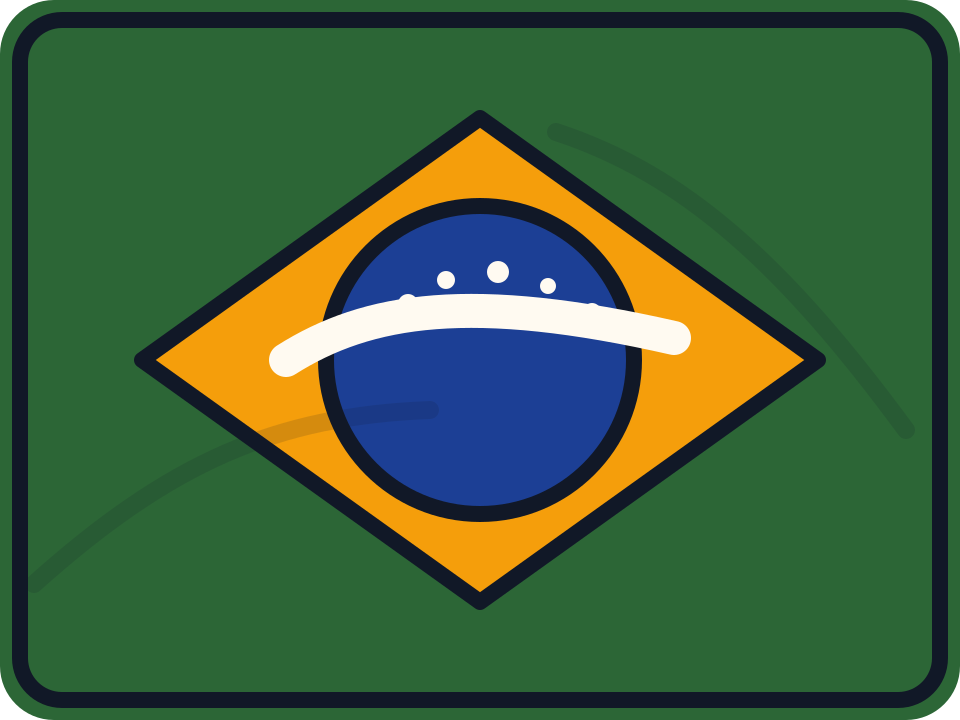

Visual da página
A base visual veio do LeafDFe. Quis uma página mais seca, com blocos fortes e curvas pontuais, sem cair naquela cara de template.
Portfólio técnico / GitHub Pages / 2026
Sou Guilherme Bezzuoli Ramos, desenvolvedor full-stack com bagagem em ERP, processos, requisitos e desenvolvimento web. Gosto de pegar fluxo confuso, organizar regra de negócio, integrar serviço e entregar interface que o time realmente usa no dia a dia.
Visual da página
A base visual veio do LeafDFe. Quis uma página mais seca, com blocos fortes e curvas pontuais, sem cair naquela cara de template.

Brasil / São Paulo
Trabalho a partir de São Paulo, com experiência prática em ERP, operação e produto web.
Foto de perfil
Full-stack com foco em SaaS, integrações e rotina operacional.
Case principal
No LeafDFe eu junto frontend, backend, regra fiscal, autenticação, cobrança e armazenamento no mesmo produto. A base atual usa Next.js, React, TypeScript, Prisma, Clerk, Upstash Redis e Cloudflare R2.
O objetivo sempre foi simples: tirar o fiscal do trabalho manual. Isso inclui consulta na SEFAZ, manifestação em lote, download de XML e DANFE, multiempresa, armazenamento em nuvem e um checkout que não atrapalha a venda.
O que esse case mostra
Link público
leafdfe.com.brProduto ao vivo com posicionamento SaaS para NF-e, CT-e e MDF-e.
Recortes reais
Aqui eu mostro o LeafDFe e alguns recortes que ajudam a provar autoria e consistência.
Projetos selecionados
Nem tudo pode ficar público. Então preferi explicar o problema, a decisão técnica e o tipo de entrega, em vez de encher a página de descrição genérica.
Negócio e processo
Stack no código
Contato
E-mail ainda é o canal mais fácil. Também deixei telefone, GitHub, LinkedIn e CV para quem quiser validar contexto antes de falar comigo.